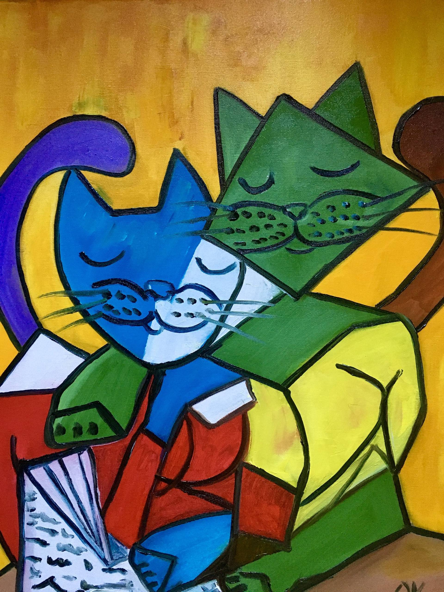

Article 1
One of the most influential artists of the 20th century, Picasso was known to have loved cats and was photographed with kittens or cats throughout his lifetime. He also gave tribute to their importance as cultural and social icons in his many paintings.

Article 2
The animal sketches of Picasso tended to be simple, abstract and upbeat. Cat and Bird is a moody oil painting which captured the stealth like skills of our feline friends.

Article 3
The multi layered intelligence of cats would provide plenty of scope for creativity right across Picasso's life.